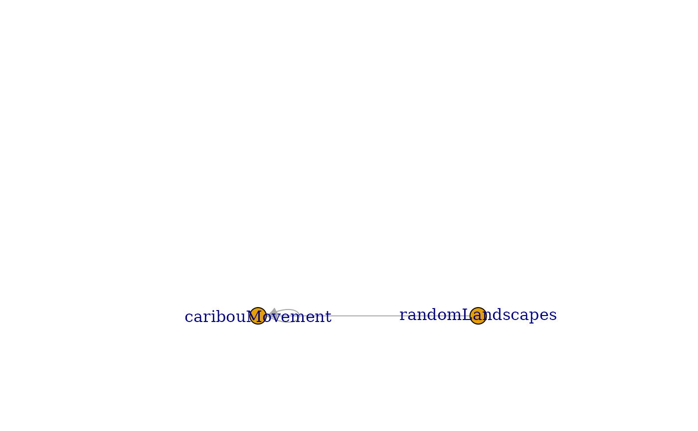

Create a network diagram illustrating the simplified module dependencies of a
simulation. Offers a less detailed view of specific objects than does
plotting the depsEdgeList directly with objectDiagram().
moduleDiagram(sim, type, showParents = TRUE, ...)
# S4 method for simList,character,logical
moduleDiagram(sim, type = "plot", showParents = TRUE, ...)
# S4 method for simList,ANY,ANY
moduleDiagram(sim, type, showParents = TRUE, ...)Arguments
- sim
A
simListobject (typically corresponding to a completed simulation).- type
Character string, either
"rgl"forigraph::rglplotor"tk"forigraph::tkplot,"Plot"to usequickPlot::Plot()or"plot"to usebase::plot(), the default.- showParents
Logical. If TRUE, then any children that are grouped into parent modules will be grouped together by coloured blobs. Internally, this is calling
moduleGraph(). DefaultFALSE.- ...
Additional arguments passed to plotting function specified by
type.
Value
invoked for its side effect of plotting the module dependency diagram.
See also
igraph(), moduleGraph() for a version that accounts for
parent and children module structure.
Examples
# \donttest{
if (requireNamespace("SpaDES.tools", quietly = TRUE) &&
requireNamespace("NLMR", quietly = TRUE)) {
library(igraph)
times <- list(start = 0, end = 6, "month")
parameters <- list(
.globals = list(stackName = "landscape"),
caribouMovement = list(
.saveObjects = "caribou",
.saveInitialTime = 1, .saveInterval = 1
),
randomLandscapes = list(.plotInitialTime = NA, nx = 20, ny = 20))
modules <- list("randomLandscapes", "caribouMovement")
paths <- list(
modulePath = getSampleModules(tempdir())
)
# Set some options so example runs faster
opts <- options(spades.moduleCodeChecks = FALSE, spades.loadReqdPkgs = FALSE)
sim <- simInit(times = times, params = parameters, modules = modules,
paths = paths)
options(opts)
moduleDiagram(sim)
# Can also use default base::plot
modDia <- depsGraph(sim, plot = TRUE)
# See ?plot.igraph
plot(modDia, layout = layout_as_star)
# Or for more control - here, change the label "_INPUT_" to "DATA"
edgeList <- depsEdgeList(sim)
edgeList <- edgeList[, list(from, to)]
edgeList[from == "_INPUT_", from := "Data"]
edgeList[to == "_INPUT_", to := "Data"]
edgeList <- unique(edgeList)
ig <- graph_from_data_frame(edgeList[, list(from, to)])
plot(ig)
}
#>
#> Attaching package: ‘igraph’
#> The following objects are masked from ‘package:terra’:
#>
#> blocks, compare, union
#> The following object is masked from ‘package:testthat’:
#>
#> compare
#> The following objects are masked from ‘package:stats’:
#>
#> decompose, spectrum
#> The following object is masked from ‘package:base’:
#>
#> union
#> Setting:
#> options(
#> spades.modulePath = '/tmp/RtmpchrTJY/sampleModules'
#> )
#> Paths set to:
#> options(
#> rasterTmpDir = '/tmp/RtmpchrTJY/SpaDES/scratch/raster'
#> reproducible.cachePath = '/tmp/RtmpchrTJY/reproducible/cache'
#> spades.inputPath = '/tmp/RtmpchrTJY/SpaDES/inputs'
#> spades.outputPath = '/tmp/RtmpchrTJY/SpaDES/outputs'
#> spades.modulePath = '/tmp/RtmpchrTJY/sampleModules'
#> spades.scratchPath = '/tmp/RtmpchrTJY/SpaDES/scratch'
#> )
#> terra::terraOptions(tempdir = '/tmp/RtmpchrTJY/SpaDES/scratch/terra'
#> Nov09 16:22:28 simInit Using setDTthreads(1). To change: 'options(spades.DTthreads = X)'.
#> Nov09 16:22:28 simInit The following .globals were used:
#> Nov09 16:22:28 simInit module global
#> Nov09 16:22:28 simInit 1: caribouMovement stackName
#> Nov09 16:22:28 simInit 2: randomLandscapes stackName
#> Elpsed time for simInit: 0.1236577 secs
#> Plot encountered an error; trying base::plot

 # }
# }